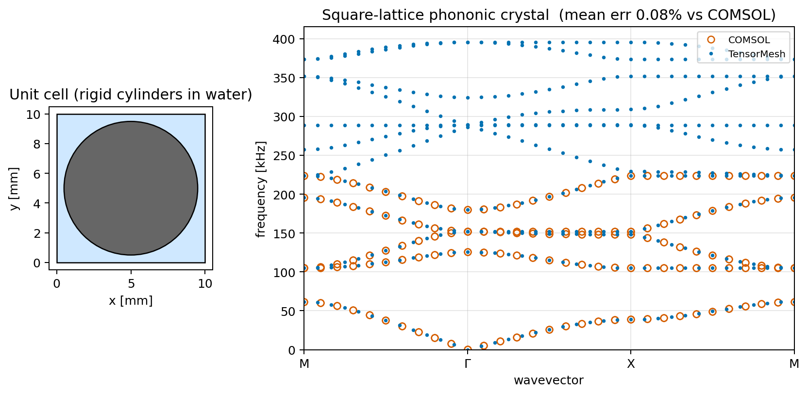
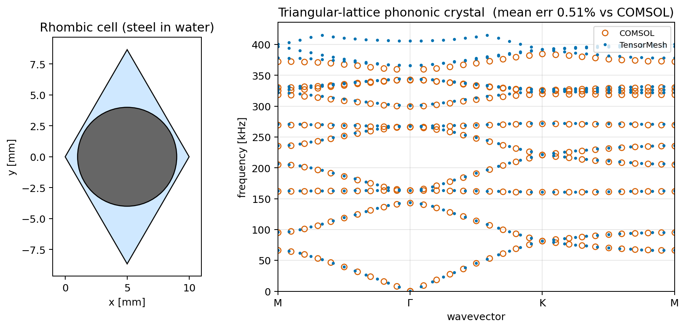
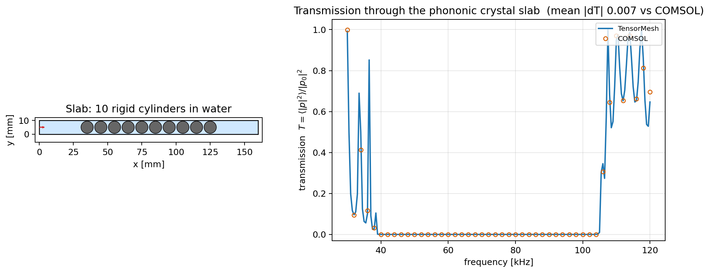

声子晶体（布洛赫-弗洛凯）¶
二维声学声子晶体算例位于 examples/wave/phononic_crystal_2d/：布洛赫-弗洛凯能带结构与有限平板透射谱，均与提交的 COMSOL 参考解进行了验证。这些算例展示了 BlochReducer —— 布洛赫-弗洛凯周期性边界条件算子，即 Condenser 的周期版本 —— 结合 复数值有限元方法 — Helmholtz 中的标量亥姆霍兹装配与复稀疏特征值求解。
脚本 |
问题 |
所涉及的要点 |
|---|---|---|
|
正方晶格，水中刚性圆柱 |
标量亥姆霍兹方程，正交晶格 |
|
三角晶格，水中可穿透钢圆柱 |
双介质加权装配，非正交晶格 |
|
刚性圆柱有限平板，平面波驱动 |
频域亥姆霍兹方程 + 一阶辐射边界条件 |
通过 BlochReducer 计算能带结构¶
单个元胞上的标量压力声学。根据布洛赫定理，波矢 \(\mathbf{k}\) 处的本征模满足 \(p(\mathbf{x} + \mathbf{a}) = p(\mathbf{x})\, e^{i\mathbf{k}\cdot\mathbf{a}}\) —— 相对的两个面通过复相位耦合。BlochReducer 从晶格矢量检测匹配的面节点，以弗洛凯相位将其耦合，并将任何装配后的算子约化到独立（主）自由度上。在不可约布里渊区路径上的每个波矢处，位移反转的厄米广义特征值求解（scipy.sparse.linalg.eigsh()）给出最低能带：
mesh -> Laplace/Mass assembler -> BlochReducer -> generalized eig
K = LaplaceElementAssembler.from_mesh(mesh, quadrature_order=2)(mesh.points)
M = MassElementAssembler.from_mesh(mesh, quadrature_order=2)(mesh.points)
bloch = BlochReducer(mesh.points, [[a, 0.0], [0.0, a]], dofs_per_node=1)
for k in k_path: # M -> Gamma -> X -> M
K_r, M_r = bloch.reduce_system(K, M, k) # complex, Hermitian
omega2 = eigsh(K_r, k=n_bands, M=M_r, sigma=sigma, which="LM",
return_eigenvectors=False)
两个能带结构脚本的区别在于物理模型，而非流程：
正方晶格，刚性圆柱 —— 声硬夹杂被网格化为孔洞（自然诺伊曼边界），因此算子为普通的拉普拉斯/质量矩阵对 \(K p = (\omega/c)^2 M p\)；路径 \(M\!-\!\Gamma\!-\!X\!-\!M\)。
三角晶格，可穿透钢 —— 材料随空间变化，因此算子为加权形式：\(K_{ij}=\int\frac1\rho\nabla\phi_i\!\cdot\!\nabla\phi_j\)，\(M_{ij}=\int\frac1{\rho c^2}\phi_i\phi_j\)，通过自定义的
ElementAssembler装配，该装配器在每个单元上携带 \(1/\rho\) 和 \(1/(\rho c^2)\)，基于共形的钢/水网格；非正交晶格矢量，路径 \(M\!-\!\Gamma\!-\!K\!-\!M\)。
元胞网格使用 gmsh 的 setPeriodic（双域情况使用 fragment），使得相对的边具有匹配的节点 —— 这是 BlochReducer 所需的前提条件。
{kind=link}

图 43 band_structure_square.py 的输出：元胞（左）与沿 \(M\!-\!\Gamma\!-\!X\!-\!M\) 的能带结构（右），TensorMesh 能带以实心标记表示，COMSOL 参考解以空心圆表示。最低能带在 \(\Gamma\) 处趋于零；带隙在各支能带之间打开。¶
{kind=link}

图 44 band_structure_triangular.py 的输出：三角晶格上水中的可穿透钢圆柱 —— 非正交元胞上的双介质加权装配。¶
有限平板的透射¶
transmission_slab.py 离开了无限晶体设定：正入射平面波（\(p_0 = 1\) Pa）穿过刚性圆柱的有限平板，功率透射系数 \(T(f)=\langle|p|^2\rangle_{\mathrm{out}}/|p_0|^2\) 在频域上扫描：
mesh -> Laplace/Mass assembler -> (K - k^2 M - i k B) p = -2 i k p0 e_in
一阶辐射项 \(B\) 与入射载荷 \(e_{\mathrm{in}}\) 为手工编写的边界线积分（无 PML —— 这与 COMSOL 的一阶"平面波辐射"条件一致），每个频率对应一次复稀疏求解。在带隙内透射降至 \(\sim 0\)；在通带内则随法布里-珀罗振荡恢复。
{kind=link}

图 45 transmission_slab.py 的输出：平板几何（左）与透射谱 \(T(f)\)（右），叠加了 COMSOL 参考解 —— 带隙表现为深谷。¶
与 COMSOL 的验证¶
每个脚本均叠加了 COMSOL 压力声学参考解并输出相对误差。参考解以小型 comsol_reference_*.npz 文件形式提交在脚本旁边，因此该对比可在离线状态下复现 —— 无需 COMSOL：
脚本 |
参考解 |
吻合度 |
|---|---|---|
|
正方 \(M\!-\!\Gamma\!-\!X\!-\!M\)，31 个 k 点 |
均值 0.08 %，p95 0.16 % |
|
三角 \(M\!-\!\Gamma\!-\!K\!-\!M\)，31 个 k 点 |
均值 0.51 %，p95 1.45 % |
|
30-120 kHz，46 个频率点 |
均值 \(|\Delta T|\) 0.007 |
能带在 COMSOL 的精确波矢处逐 k 点比较（最低 10 个模式，最近频率匹配）；透射率通过插值到 COMSOL 的频率网格上计算。若缺少 npz 文件，脚本仍会运行并跳过叠加显示。
运行脚本¶
cd examples/wave/phononic_crystal_2d
python band_structure_square.py
python band_structure_triangular.py
python transmission_slab.py
每个脚本均提供 run_demo(...) 函数返回诊断信息，以及 main() 函数支持 --no-plot、--output 和网格密度/能带数目标志。
下一步¶
复数值有限元方法 — Helmholtz —— 这些示例所依赖的复值亥姆霍兹机制。
波动方程 —— 时域波动方程。